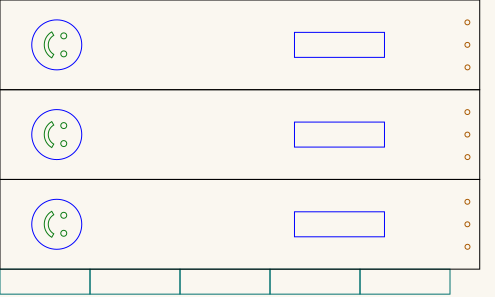
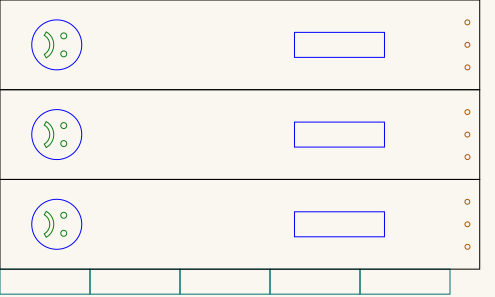

Slapstick — comedy on one side, tragedy on the other
A slapstick is two long slats joined at one end. Swing it and the free ends clap together with a crack far louder than the effort suggests. It is the sound effect that gave stage comedy its name, and it is why a certain kind of comedy is still called slapstick.
This one carries a face on each side, taken from the comedy and tragedy masks of the theatre: laughing on one, weeping on the other. Which way round it lands when you swing it is the joke.
Each side is a laminate: three paddles are glued one on top of the other, making sure that both sides have the face out, which will work because of the horizontal symmetry. The handle is built the same way, from the short strips, then glued to the paddle where the engraved rectangle marks it.
Get the files
- Everything as a ZIP — both sheets.
- Repository — if you want to change a face or the proportions.
- Or click any picture below to download that one cut file.
Released under CC0 1.0 — do what you like with them, no attribution needed. Built for LaserMadeMusic.
The two sheets
One sheet per side. They are the same in every respect except the mouth. Click either to download it — these are display renderings, thickened and painted onto a light ground because the cut files draw a hairline on no background, which a browser shows almost invisibly. The cut-order colours are untouched.
 |
| slapstick_happy.svg · comedy · 495 × 297mm sheet |
 |
| slapstick_sad.svg · tragedy · 495 × 297mm sheet |
{kind=link}
{kind=link}
Colour is the cut order
Every colour needs an explicit operation, and the order matters. Red is not a cut at all; the rest run first to last:
| Colour | What it is | When | |
|---|---|---|---|
red #ff0000 | the face outline and the glue rectangle | engrave — never cut | |
| 1 | green #00ff00 | eyes and mouth | first cut |
| 2 | blue #0000ff | the three rope-hinge holes | second cut |
| 3 | magenta #ff00ff | the five handle strips | third cut |
| 4 | black #000000 | the three paddle outlines | last cut |
The outlines come last for the usual reason: once a cut frees a part, anything still to be cut inside it can move. Cut the small features while the blank is still held by the sheet.
A per-colour job silently skips any colour you leave unmapped. Leave black unmapped and you will engrave two faces and cut no paddles.
What is on each sheet
Measured out of the files, not copied from whatever drew them. Both sheets are identical here — 32 objects each, matching object for object:
| Part | Count | Size |
|---|---|---|
| Paddle blank | 3 | 479.7 × 89.7mm |
| Handle strip | 5 | 90 × 25mm |
| Face outline, engraved | 3 | 50mm circle, centred 56.7mm from the left end |
| Glue rectangle, engraved | 3 | 90 × 25mm, starting 294.5mm from the left end |
| Eyes | 6 | 6mm each |
| Mouth | 3 | 9.5 × 26mm |
| Rope-hinge holes | 9 | ~5mm, 12.3mm from the right end, at 22.1 / 44.6 / 66.8mm down |
Both sheets are 495 × 297mm and millimetre-true — 1 user unit = 1 mm with a physical width/height — so they print and cut at real size.
Note the face reads sideways on the sheet, because the paddle is laid out along its length. It comes upright when the slapstick is held to swing.
Building it
- Glue three paddles one on top of the other, once per sheet — three for comedy, three for tragedy. That laminate is one slat. Make sure both sides have the face out: turn the outer two so the engraving shows, and the middle one however you like. This works because the face is symmetric about the paddle's long centreline — the circle, the mouth and the glue rectangle sit on it, and the two eyes are at exactly ±9mm — so turning a paddle over leaves the face reading the same.
- Glue the five short strips into one block. That is the handle.
- Glue the handle to the paddle over the engraved rectangle, which is there to show you where. It starts 294.5mm along, so the handle sits toward the far end from the face.
- Lace a rope through the three holes at the far end to join the two slats. The rope is the hinge — there is no pin and no hardware. It lets the slats swing apart and snap together, and it is what the holes are for.
The rope is not in these files, and nor is a length or a thickness: both depend on how far apart you want the slats to open and what you have to hand. The holes are ~5mm, so that sets the ceiling.
The engraved rectangle is a mark, not a recess. Engraving removes very little material, so the handle glues onto the surface rather than into a pocket.
Where the handle sits decides how fast the slats meet
The free slat turns about the rope hinge, so the whole thing is a lever. Rotating your grip through a small angle swings the tip through the same angle at a much longer radius, and the ratio is simply tip distance ÷ grip distance, both measured from the hinge. Move the grip closer to the hinge and the tip moves faster for the same hand motion.
Measured off the sheet, from the hinge line: the tip is 467mm away and the engraved handle footprint runs from 83mm to 173mm.
| Grip, from the hinge | Tip moves |
|---|---|
| 83mm — handle edge nearest the hinge | 5.6× as fast as your hand |
| 128mm — centre of the engraved rectangle | 3.6× |
| 173mm — handle edge furthest from the hinge | 2.7× |
You can test this without re-cutting anything. The handle is 90mm long, so sliding your hand from one end of it to the other already spans 5.6× down to 2.7× — a factor of two in tip speed, on the slapstick as drawn.
If you want more than that, move the engraved rectangle closer to the hinge before cutting. Two things push back: the same lever that multiplies speed divides force, so a closer grip needs a harder pull for the same swing, and it gets twitchier to aim. The handle also has to clear the rope and still fit a hand — 90mm of it.
Before you cut
Cut it in 3mm Baltic birch plywood. That is what this is built in, and the laminates are counted for it: three paddle blanks make a 9mm slat, and five handle strips make a 15mm handle. A slapstick's whole job is to be swung hard and stopped abruptly, so those thicknesses are doing real work — change the stock and you change how stiff each slat is.
A slapstick is loud on purpose, and it is a lever. Two slats of nearly half a metre clapping together will startle anyone nearby. Keep fingers clear of where the slats meet.
Files
slapstick_happy.svg · slapstick_sad.svg | one sheet per side — three paddles, five handle strips |
previews/ | display renderings — not cut files |
index.md · index.html | this page; the markdown is the source |